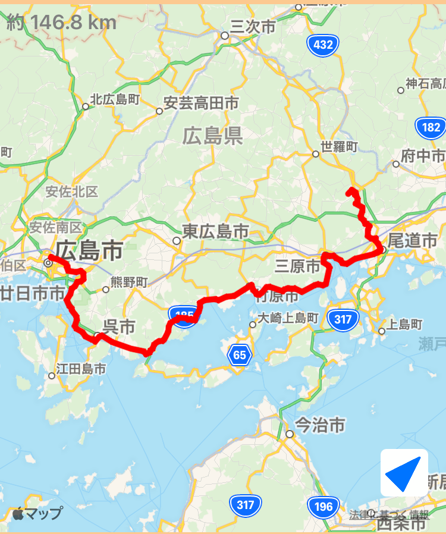

~92日目~
10/1 宮崎⇨延岡
~93日目~
10/2 延岡⇨佐伯⇨臼杵⇨大分
~94日目~
10/3 大分市内
~95日目~
10/4 大分⇨別府
~96日目~
10/5 別府⇨中津⇨行橋
~97日目~
10/6 行橋⇨北九州空港⇨宇部
~98日目~
10/7 宇部⇨秋吉台⇨宇部空港⇨防府
~99日目~
10/8 防府⇨山口⇨防府
~100日目~
10/9 防府⇨岩国
~101日目~
10/10 岩国⇨温井ダム⇨宮島⇨広島
~102日目~
10/11 広島⇨呉⇨江田島⇨広島

~103日目~
10/12 広島⇨尾道
~104日目~
10/13 尾道⇨大久野島⇨尾道
~105日目~
10/14 尾道⇨しまなみ街道⇨今治
~106日目~
10/15 今治⇨松山空港⇨松山